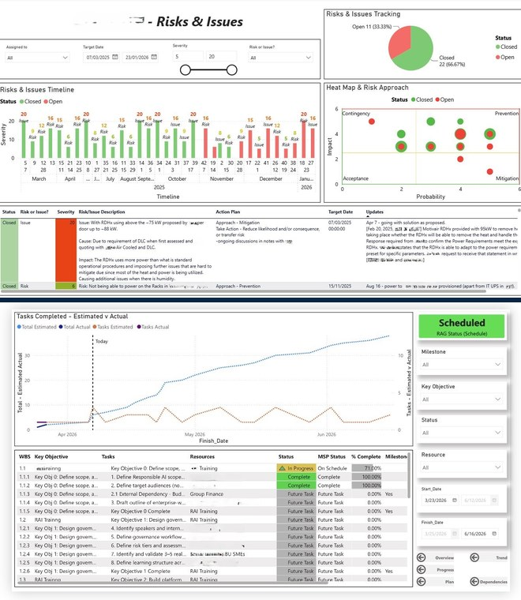

March 2026
Why Every AI Program Needs a PMO From Day One
AI initiatives move fast and fail expensively without governance. Here's why standing up a PMO on day one — not month six — is what separates controlled delivery from chaos.
Read more →